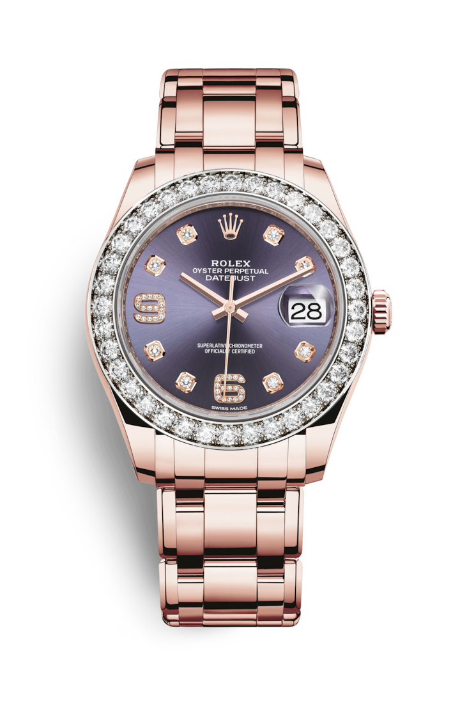

"Характеристика модели"
Золото Еverose
Чтобы красота часов из розового золота не меркла со временем, компания Rolex создала и запатентовала особенный сплав 18‑каратного розового золота, изготавливаемый в ее собственном литейном цехе: золото Everose. Это 18‑каратное золото, изобретенное в 2005 году, используется в моделях Rolex из розового золота.
Циферблат цвета баклажана (Aubergine)
По циферблату легко узнать часы Rolex. Он отражает стилистику бренда и обеспечивает отличную читаемость показаний. Отметки на всех циферблатах Rolex изготавливают из 18‑каратного золота, благодаря чему они не тускнеют со временем. Каждый циферблат Rolex разрабатывается и изготавливается в стенах компании, причем большая часть операций выполняется вручную, с тем чтобы добиться максимального совершенства.
Браслет Pearlmaster
Разработка, изготовление и тестирование браслетов и застежек Rolex невозможны без передовых высоких технологий. Как и в случае любых других составляющих часов, визуальный контроль, осуществляемый мастером, гарантирует их безупречный внешний вид. Чувственный и изысканный одновременно, этот массивный золотой браслет с округлыми пятирядными звеньями был создан в 1992 году для часов Pearlmaster. Браслет Pearlmaster сочетается со скрытой застежкой Crownclasp.
Механизм 3235
Новые часы Pearlmaster‑39 оснащены механизмом нового поколения: калибром 3235, полностью разработанным и изготовленным Rolex для максимального улучшения их характеристик. Этот механизм отмечен сертификатом швейцарского хронометра, который выдается часам, успешно прошедшим тестирование в Официальном швейцарском институте хронометрии (COSC). Однако компания Rolex провела дополнительные испытания механизма после его вставки в корпус, чтобы вдвое повысить точность хода при использовании по сравнению с показателями точности официального хронометра. Эта заключительная проверка точности хода часов в собранном виде была выполнена по собственным методам Rolex и на высокотехнологичном оборудовании, которые были специально разработаны компанией.
"Полное описание модели"
Часы Rolex Pearlmaster являются жемчужиной ювелирной коллекции Rolex. Модель Pearlmaster с плавными округлыми линиями отличается уникальным богатством циферблатов и изяществом отделки драгоценными камнями: бриллиантами, сапфирами и рубинами. Эти часы изготавливаются исключительно из 18-каратного желтого, белогозолота или золота Everose, отлитого Rolex в своем собственном плавильном цеху.
|